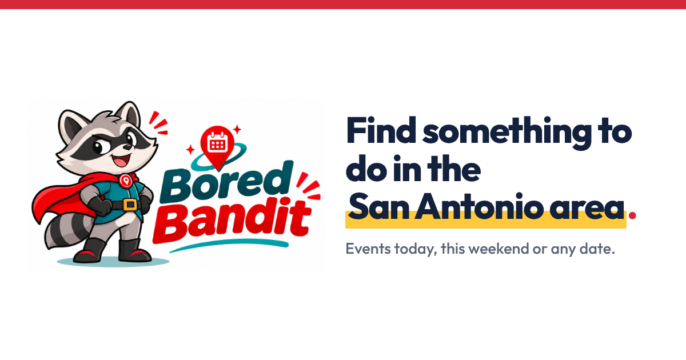

Bored Bandit: A Free Way to Find Things to Do in San Antonio, Austin and Corpus Christi
“What is there to do tonight?” used to mean opening five apps, three Facebook groups and a couple of event calendars. So I built one place that does all of that for you.

Bored Bandit is a free website that gathers local events into one list you can actually search. Concerts, markets, trivia nights, dance classes, comedy shows, kids’ story times, bike rides, chess tournaments: if it’s happening around town, the goal is for it to be on Bored Bandit.
How it works
You only have to answer two questions: when and how far.
- When: today, tomorrow, this weekend, this week, this month, next month, or any date you pick.
- How far: within 1, 5, 10, 20 or 40 miles. Enter your ZIP code or use your location, and every event shows how far away it is.
Events are grouped into morning, afternoon and evening, with the time, venue, address, host and price (or “Free”) right there. Tap Details and it takes you straight to the original event page to get tickets or RSVP.
On a random Tuesday this week, it found 25 events within 20 miles of downtown San Antonio, from a 7 a.m. real estate meetup to a beginner swing dance class, live music at Paper Tiger and the Buena Vista Social Club musical at the Majestic.
Fresh every day
Every day, we dig through event calendars all over the web, from Eventbrite, Meetup and Facebook events to Bandsintown, venue websites and local listings, and add the ones worth going to. Past events drop off once they’re over. You don’t have to check a dozen places, because Bored Bandit already did.
Three cities (so far)
Bored Bandit started in San Antonio, my hometown, and now covers three areas:
Each city also has quick pages for this weekend, this week and this month, so you can bookmark the one you use most.
Little things that make it easier
- Star events you like. They’re saved right on your phone or computer in a “Your starred events” list. No account, no sign-up.
- Install it like an app. On most phones you can add Bored Bandit to your home screen, and it still shows your last list of events even with a weak signal.
- Submit your event. Hosting something? Use the Submit my event form and send me the link.
For event organizers and local businesses
Bored Bandit is free for everyone, and it stays that way thanks to local advertisers. There are two ways to get in front of people who are actively looking for something to do:
- Promote your event. Event organizers can pay to promote an event so it stands out on Bored Bandit.
- Promote your business. Local businesses can advertise on Bored Bandit and across all of our partner websites built by Ned Web Services, all with one ad. Advertise with us.
Interested? Get in touch and we’ll find the right fit.
Bored Bandit is brought to you by Ned Web Services and The Tea Blossom.
Give it a try
Next time someone says “I’m bored,” open theboredbandit.com, pick a day, pick a distance, and go.
Which city should Bored Bandit add next? Let me know.